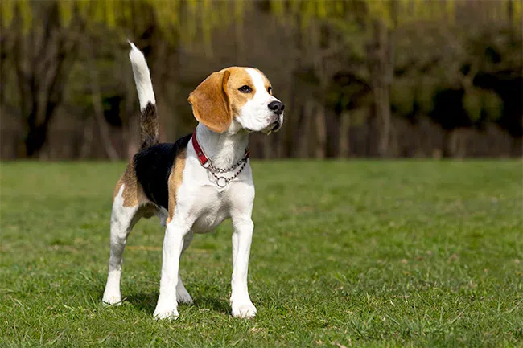
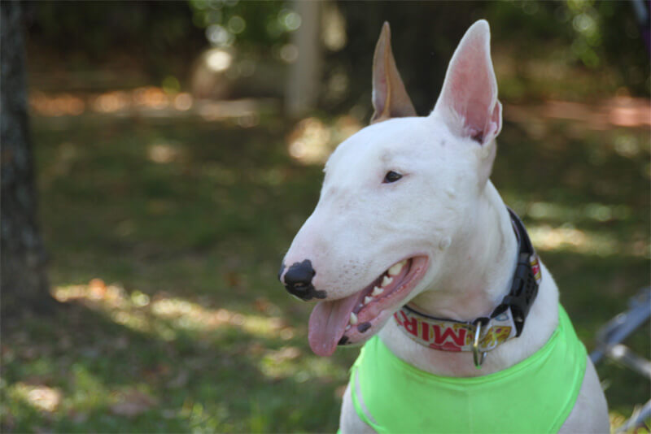

Atividade
Mural de Cães desaparecidos
Mural - Encontre aqui cães desaparecidos
BEAGLE, desapareceu de casa a 2 dias, Por favor ajudem. Ele precisa de medicamentos continuos ele é Cardíaco, Desapareceu prox. Metrô Paulista. Atende pelo nome de Toby... Entrar em contato

BULL- Cachorro encontrado na Lapa - SP, muito dócil, estava muito assustado. Contato com Fábio - 8888-9999

COLLIE- Perdi um cão dia 28 na rua Julia Rica as 17:00h, ele está na minha família hà 4 anos. Obrigado ! Contato com Luis - 7788-9999
Atendimento: atendimento@desaparecidos.com - (0XX) 99999-9999 / (0XX) 88888-8888